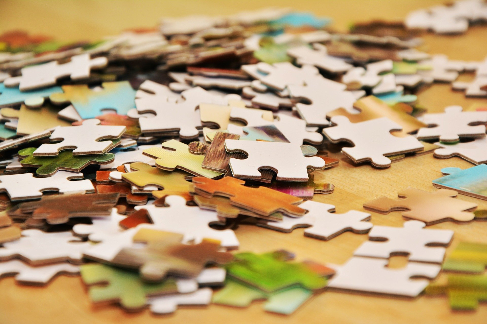
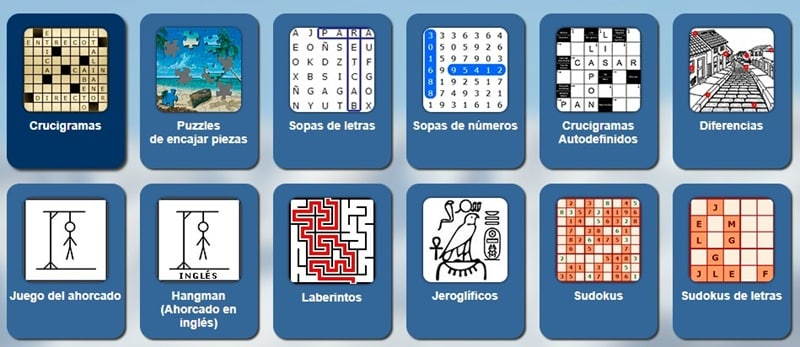

Pasatiempos
| Título | Género | Edad recomendada |
|---|---|---|
| Don Quijote | novela de caballería | 10-14 |
| El principito | fábula infantil | 6-8 |
| El código Da Vinci | thriller | 12-13 |
| Ana de las tejas verdes | literatura juvenil | 9-10 |
Los secretos de la cocina:
La técnica sobre el paso a paso: si aprendes a brasear correctamente,
no necesitarás leer una receta nunca más.
La clave está en el control del fuego y el tiempo.
Ingredientes de temporada:
Menos es más. Un tomate en su punto solo necesita sal y un buen chorro de aceite de oliva virgen extra.
El toque final: Un plato cambia por completo con un elemento ácido, o una hierba fresca añadida justo antes de servir.
Recetas sencillas para empezar



| JUEGO | MATERIAL |
|---|---|
| Las damas | tablero de damas y 24 fichas negras y blancas |
| El ajedrez | Tablero de 64 casillas y un juego de 32 piezas |
| El parchís | 1 tablero, 12 fichas y 4 dados |
| La oca | Tablero de oca, dados y 4 fichas |